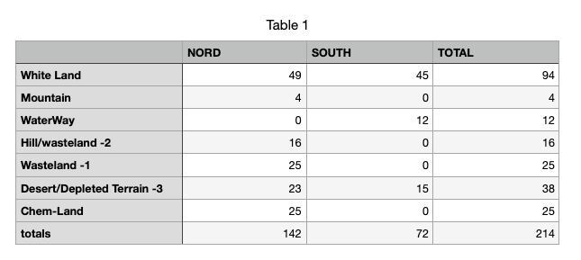
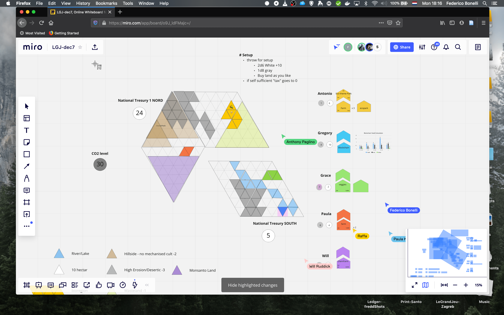
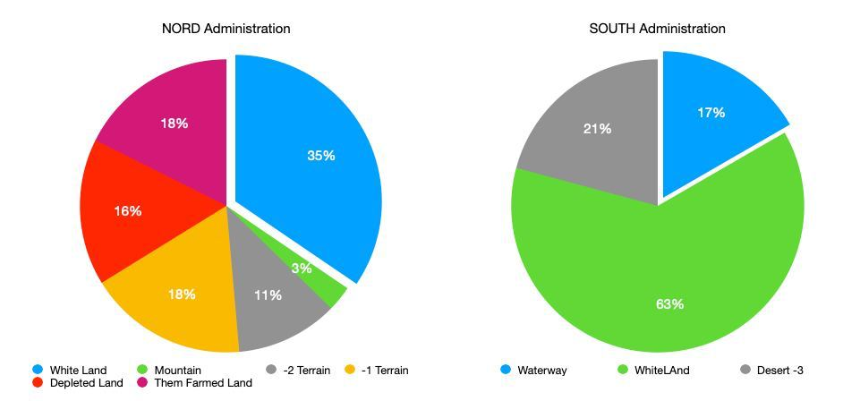
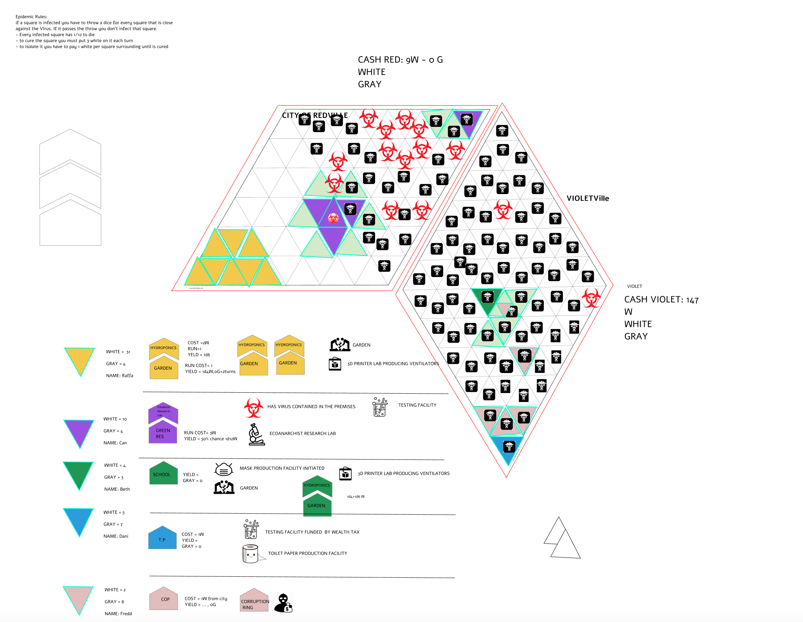
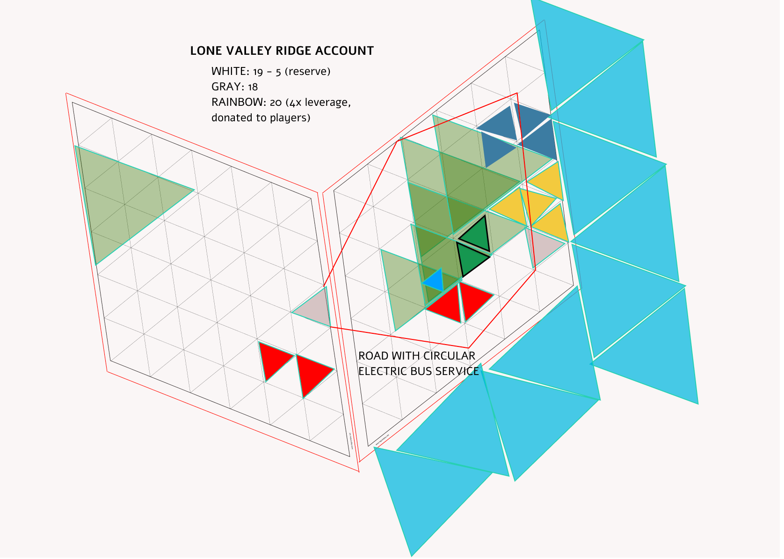
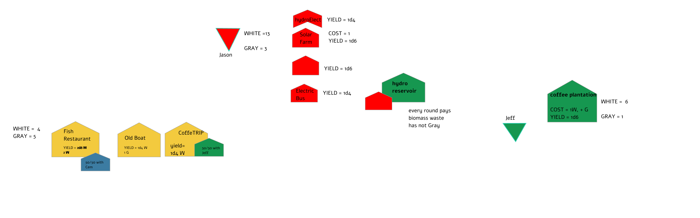
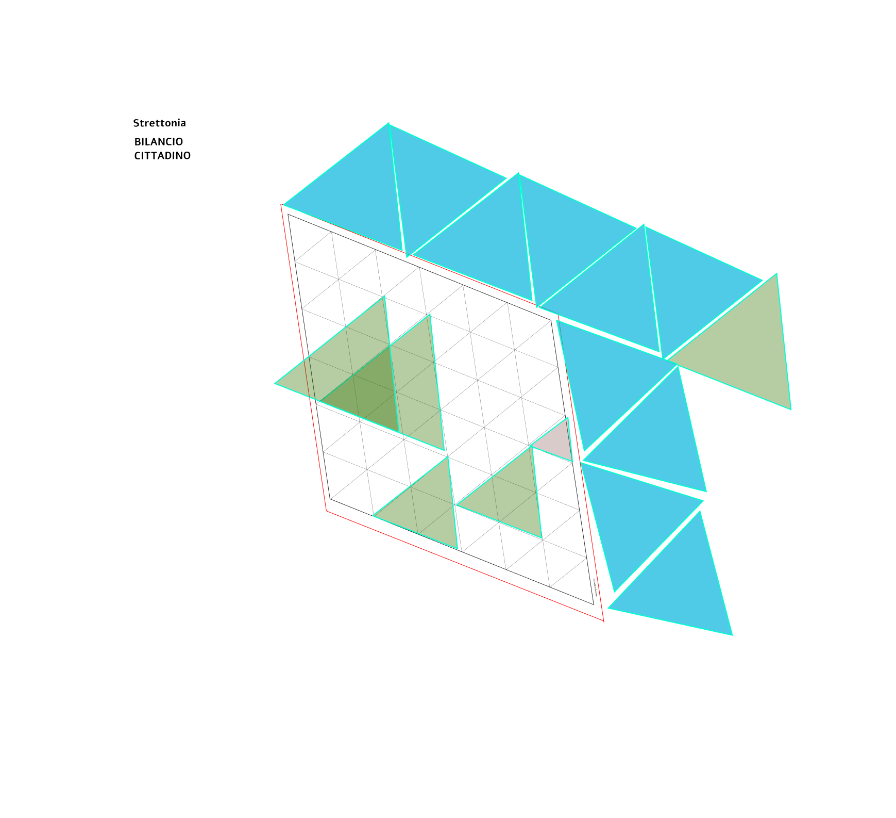

Le Grand Jeu
Scenarios
Scenarios
Scenarios from the table
Worlds the players brought into being
legrandjeu.net
Le Grand Jeu — Scenarios
First edition, April 2026.
Compiled from play reports published at legrandjeu.net between 2020 and 2021, with additional material from workshops and summer schools.
© 2020–2026 Federico Bonelli, Raffaella Rovida, and the players named in each chapter.
This work is licensed under a Creative Commons Attribution-NonCommercial 4.0 International License. You are free to share and adapt this material for non-commercial purposes, provided you give appropriate credit.
Set in system-ui and Iowan Old Style. Designed for A5 print.
legrandjeu.net
Chapter I
A game for prototyping worlds —
elegantly simple, remarkably complex.
“Global thinking, local action.” The founding instruction
Le Grand Jeu is a collaborative game for prototyping worlds. You are given a handful of basic pieces and a shared board; everything else — activities, societies, economies, victory conditions — is built at the table, with the hands and the words of the players.
It was born from a long conversation between Federico Bonelli, philosopher and artist, and Raffaella Rovida, engineer and designer, about democracy, permaculture, and alternative economies. The early sessions were informal, at kitchen tables; later ones filled workshops, summer schools, and research gatherings from Alassio to Berlin, from Amsterdam to Messina.
The aim is the search for positive narratives grounded in the old instruction: global thinking, local action. A game that starts small — a few coloured triangles, a handful of dice — and expands, within an afternoon, into a working theory of a place.
Every turn, a player chooses from five possible actions. They have been named and re-named across versions; in the current canon they are:
LGJ is not a simulation, not a pedagogy, not a board game in the conventional sense. It is closer to a collaborative sketchpad: a way to make a question about the world visible, playable, and editable in the hands of a small group.
Players come to the table with positions — about money, about climate, about cities — and the game gives those positions a place to meet, rub against each other, and produce something none of the players brought alone. The chapters that follow are records of what has emerged when that has happened.
A note on reading this book
Each chapter can be read on its own. But a few mechanics invented in one scenario have returned, refined, in later ones — the Monte-Carlo Testing from Pandemic made citywide votes tractable in Strettonia; the Green Fund from PermaCoin has shaped treasury debates in sessions beyond this book. The Appendix collects the mechanics in one place, for masters who want to lift them.
A companion volume, Le Grand Jeu — Science & Society at the Table, covers two longer-form scenarios (Eurofusion and SPES) that deserved their own book.
Chapter II
Land regeneration, distributed ledgers,
and a coin that funds itself.
“1 white in the fund becomes 4 in the green.” The deal, session two
Late 2020. Climate change is on every screen, land-regeneration practice is gaining ground, and a generation of distributed-ledger projects is trying to prove that blockchain can do something other than speculate. PermaCoin was designed to bring these three threads to the same table and let them fight it out in a single afternoon.
The organisers gathered five first-time players, all experts in adjacent fields — permaculture, regenerative finance, governance design — and handed them a planet. The question was not "who wins?" but what kind of dynamics emerge when we put these tools in the same room?
The research brief
Considering the collective interest in fighting climate change by leveraging land-regeneration practices and blockchain / distributed governance, we decided to create an ad-hoc LGJ scenario and gather around the table a group of experts who were first-time players.
What this scenario adds to base LGJ: two regions with unequal treasuries linked by a fixed 1 : 3 exchange rate, a planetary-boundary pot of greys that kills the world if it crosses 50, mandatory collaboration (no one wins alone, no one loses alone), and a blockchain actor on the board whose purpose is deliberately left undefined so the table can invent it.

A global pot of greys represents atmospheric CO₂, set at 30 at start. Game-over threshold: 50 — a nod to the Stockholm Resilience planetary-boundary framework. Unlike player greys, this pot is everyone's and no one's.
Each player inherits an activity already running when the game begins: three farms (one small, two medium), one corporate chemical farmer (purple, North), one blockchain start-up whose role is not yet defined.
Rule of victory
To win, keep your part of the world from collapsing. Push the grey indicator down. Nobody dies. This is a collaborative game.
The consolidated cast across sessions one and two (some NPCs in session two were live players in session one):
No pre-assigned roles. Each player chose a colour, then negotiated a starting legacy with the master. The master set the dice-roll target for the first success — low rolls meant early liquidity trouble and forced trades; high rolls meant the player could shape the board.
The table did not come with a story —
the starting rolls wrote the opening act.

Paula's red triangles took over a corner of the corporate chemical farm. Public-support roll: 9/10 — the occupation stuck. The corporation, under pressure, announced a counter-move that would shape the whole game.
Rather than fighting the occupation, Gaia's chemical farm initiated a soil-regeneration process around the occupied lands. Purple triangles began turning toward green. First sign that the game was not going to be a simple pollution-versus-nature morality play.
The two administrations agreed to pool regeneration money. North put in 12 W, South put in 2 W — half of each treasury. Nobody questioned the asymmetry. The fund became the hinge of the second session.
Gaia and Eco-chain cut a deal at the table: 1 W from the fund mints 4 Greens — a new currency — that can only be spent to buy and regenerate land, with an irreversibility clause. The fund becomes fractionally reserved. Land becomes collateral. Stewardship enters the game.
The Green saved the chemical farm first, then the northern sociocracy. Adoption was wide and fast. But by round five the global grey had silently climbed past 50 — a prosperous economy quietly over its planetary boundary.

Every LGJ session invents. These are the mechanics that did not exist at start of play, and that other masters have carried into their own games since. They appear again — often in modified form — in later chapters.
A shared pot funded by both administrations, earmarked for regeneration. The asymmetry (12 W vs. 2 W) was accepted without debate — an emergent rule about proportional responsibility.
Mechanic: each region contributes half its treasury to a common pot. The pot can only be drawn against by activities that reduce grey.
A second currency minted against the Green Fund at 4× leverage. Spendable only to buy and regenerate land. The land then carries a stewardship covenant: once regenerated, always regenerated.
Mechanic: 1 W from fund → 4 G. Coins are destroyed when land is returned to wasteland. Blockchain player tracks issuance.
A player archetype designed mid-game to represent labour mobility with economic fragility. The migrant generates grey just by existing in the economy — modelling how precarity "burns" value even when the worker is legal.
Mechanic: per round — generates 1 G, needs 1 W to work, yield 1d4−2 W.
A grey-consuming activity: collect plastic from the wasteland and manufacture objects for the South. Justified to the council as a way to make the chemical farm solvent without breaking the regeneration frame.
Mechanic: input 1 W + 1 G, output 4 W.
A research centre framed as political control of capital through science. Created after Paula's failed second occupation — an answer to the question "what do you do after your street movement loses momentum?"
Mechanic: Paula spends greens to fund research; research reports constrain what the Green Credit can be legitimately spent on.
To a transition that does not focus on regeneration,
the first effect is a global growth of waste.
Chapter III
COVID-XX: a near-future game of contagion,
self-sufficiency, and unevenly distributed safety.
“Access to human capital
comes with the risk of infection.” Scenario brief
Late March 2020. Lockdowns had just begun in Europe. The LGJ team decided to move the game online and use a pandemic as the scenario. The world of COVID-XX is a near-future world in which a "first wave" has already passed, leaving behind empty schools, collapsed institutions, abandoned factories, and unclaimed land — ready to be repurposed.
Daniel and Beth spent the week before the game tracking unfolding narratives from COVID-19 around the globe: public reactions, resource distribution, ratcheting state control and surveillance, supply-chain disruptions. Those notes became a deck of scenario-specific LGJ cards tailored for this edition.
The premise, as told at the table
On 20.02.2020, Nostradamus appears in the dreams of all you leaders of nations, communities, TAZ: "Oh puny mortals, I have seen what Gaia has in store for you — she has decided to wipe out humanity within a few years through global warming. But I have pleaded with the cosmos to give you one last chance: a global pandemic is going to appear on planet earth, and you will be tasked with making humanity survive this event while addressing other challenges that appear as life's course takes on."
The group was scattered across Berlin, Amsterdam, and Copenhagen — no physical table was possible. The scenario became an excuse to test whether LGJ could be played through a shared Figma board, a Telegram dice bot, and a jitsi audio call. The answer turned out to be yes, with new possibilities that the physical game does not have.
Names chosen deliberately abstract — no cultural pre-suggestion:
At start, the epidemic has not yet been spotted in either city — but population and authorities are aware of the necessary steps, and basic technology and knowledge are available. For the game we base ourselves on what is actually known in March 2020.
Standard distribution per player: lands 1d6, whites 2d6, greys 1d6.
White — energy, money, time.
Grey — waste, garbage, dissipation, bad karma.
Contagion, standard
Each round, roll the city's contagion die for every exposed triangle. A 1 means infection. As containment measures succeed or fail, the die size changes — smaller die = higher risk.
Each player chose a colour, described their starting legacy, and rolled a d10 for success. Low rolls meant slow starts and extra mechanics to compensate; high rolls meant the player shaped the game's early direction. Beth rolled low on the school occupation; Dani rolled high on the toilet-paper warehouse. Both became central to the session.
Can drew the "bioterrorism" card and found himself custodian of a virus specimen in his lab. He considered infecting the city's toilet paper — and decided not to. The choice reframed the whole game toward cooperation.
Dani proposed a research tax. Violetville rolled 9/10 on city wealth. Using the Telegram dice bot, the master rolled 1d6 for each of the city's 60 triangles: 207 W collected. The money funded citywide testing — only 2 triangles came back infected.
Redville imitated the tax. Rolled 1/10 on city wealth. The bot collected 88 W — not enough to test the whole population. The asymmetry of wealth became the asymmetry of public health. Nobody needed to explain it.
A death cult appeared on an LGJ card. Redcity's infection rate jumped to 50% until the cult was tracked down. Three quarters into the game, Can rolled the "Alien Technology" card — a substantial contagion-reducer — and immediately open-sourced it. Every city's rate dropped to 1/12.

Playing online forced the group to invent — both to fit the medium and to model a pandemic the world was actually living.
Citywide testing modelled as a dice roll per triangle. Cost 1d4 W per triangle to test. Then roll the city's contagion die — 1 = infection. Impossible on a physical table; easy with /r 60d6.
Mechanic: cost = 1d4 × N triangles. Infections = number of 1s rolled. Results timestamped in chat.
Progressive public funding via Monte-Carlo sampling. First a d10 sets the city's base wealth; then 1d(wealth) per triangle gives total revenue. Unequal cities collect unequal taxes — the mechanic models inequality without modelling it.
Mechanic: d10 → wealth tier (1d1–1d8). Sum of 1d(tier) × N triangles = public revenue.
Introduced mid-session: any technology invented is globally shared. When Can drew the Alien Tech card, the rule forced him to open-source it. Contagion dropped everywhere. Turned the scenario from competition to solidarity, mid-play.
Mechanic: all inventions are global. Private ownership of knowledge is a house rule, not a default.
The community assigns grey-coin penalties to the police player based on the perceived ethics of their actions. A public, playable mechanism for holding authority accountable — visible on the board.
Mechanic: end-of-round community vote. Each "unethical" action = +1 G to the sheriff's personal pool.
Every move, roll, and negotiation timestamped in the group chat. Fredd noted at the debrief: "as they would be on a blockchain." An unplanned DLT use-case emerged from the medium.
Mechanic: chat-as-ledger. Every dice roll and every player decision visible and auditable by replay.
Actions and rolls were timestamped on Telegram —
as they would be on a blockchain.
Chapter IV
Two small towns, one dry valley,
and a coin that travels at four-times leverage.
“What if income / spending
is an agreement to offer savings?” The pivot, mid-session
Two small towns share an administrative unit in a dry valley. The eastern township draws water from a nearby lake. The economy is fragile, and the question on the table is concrete: can a single business start a local currency that the rest of the valley actually accepts?
The scenario was written against a background of frustration with existing monetary tools — cooperative credit unions, voucher systems, loyalty coins — and the feeling that each of them only solves part of a local-economy problem. The four players agreed to treat the game as a design session: the goal was not to win but to see which mechanic stuck when exposed to the table's pressure.

White — money, energy, electricity, good things.
Grey — waste, CO₂, bad karma.
Rainbow — local currency created on a bonding curve at 4× leverage, proposed mid-game by a player.
The pivot question
The city puts 5 W into a bonding curve and mints 20 R. Distributed to the participants as relief — a coin born to save people from starvation.
The first answer from the table: vouchers. People recognise the use; the issuer can be a group or an independent body that becomes trade-ready over time. Two parallel proposals emerged:
Mid-session, the discussion shifted from "how do we make money flow?" to a different question: what if income / spending is, at bottom, an agreement to offer savings? Subscription becomes the natural shape: energy, coffee, bus, services can all be offered on a subscription base. Costs drop; discounts become routine.
And then a step further: staking is subscription 2.0 — common holding of wealth. The accounting platform becomes a commons.

A long session (9:00 to 23:30) produced more monetary ideas per hour than most economics seminars. Five stuck.
Local currency minted on a bonding curve at 4× leverage. The city commits 5 W, the curve yields 20 R, distributed to participants as subsistence relief.
Mechanic: N whites committed → 4N rainbows minted. Redemption burns rainbows back to whites at the same rate.
Rather than a new currency, turn the municipal account itself into a cooperative credit union. Same monetary effect, different governance — every taxpayer becomes a member with a claim.
Mechanic: municipal treasury votes instead of spends. Members draw against a shared float.
Recurring access to energy, coffee, transport, services — priced lower than the sum of spot purchases. Once a shared trusted accounting layer exists, subscriptions become trivial to layer.
Mechanic: the accounting platform is the real monetary infrastructure. Currency on top is a feature.
Long-term lock-in not for yield but for common holding of wealth. Participants hold together rather than spending together. The curve shifts from flow to storage.
Mechanic: locked funds receive governance weight and access to discounted services rather than interest.
"My coffee plantation offers 20% off to subscribers who also support public good X (e.g. clean energy)." Subscriber loyalty becomes a vector for prosocial coordination.
Mechanic: discounts are conditional on stacking subscriptions. Composability is the incentive.
What the session left with the players was not a winning currency but a re-ordering of the problem. Money is less interesting than the accounting platform that holds it. The shape of agreements — who can subscribe, who can stake, who gets discounts — matters more than the unit of exchange.
Chapter V
SOU: waste, energy, food — what 23 children
aged 7 to 12 built in three hours.
“Economy means the art of managing the home,
the place where we live together.” Closing circle, Alassio 2021
SOU is the Architecture School for Children at Farm Cultural Park. Its summer format, SOUper, opened its second meeting at Alassio with Le Grand Jeu, adapted for young hands and minds. The question driving the adaptation was old and unadorned: what does it mean to manage the home we share?
The word economy comes from the Greek oikos (house) and nomos (rule) — the rules of the house. For children who grow up assuming money is grown-up business, the etymology is itself a pedagogical act. The game recovers it.
The design brief
Three tables, three cities, one common logic. Listening, collaboration, sharing — and, together, learning through play. The facilitators wanted to see whether a very young table could use the triangles to think a whole system.

On a triangular grid platform — the city — players place small triangles (their land). On those triangles they build activities, shaped with their fingers. Each turn the activities produce or use whites and greys. Players choose to compete or to cooperate — but careful, situations change, and the city must be ready to react.


With very young players, the inventions are pedagogical as much as mechanical. These patterns emerged and have travelled into other SOU sessions and children-facing LGJ workshops since.
Three tables running in parallel — Waste, Energy, Food — each with identical rules but a focused starting condition. Children self-sort to the theme that pulls them. Cross-table exchange then becomes a structural invitation rather than a rule.
Mechanic: shared pieces, shared rules, different starting decks. Tables can trade mid-session.
Adults tend to describe their activities in words. Children shape them. The triangles become buildings, roads, and — more interestingly — processes: a folded triangle is a recycling plant; three overlapping triangles is a food market. The physical object carries the design.
Mechanic: no descriptions required. If you can shape it with the pieces, it exists on the board.
Within minutes, children began trading between Energy and Food, between Waste and Food. The thematic boundaries became prompts, not walls. The facilitators did not plan for it. The children invented the topology.
Mechanic: any player may walk to another table and propose a trade. Accepted trades count against both tables' flows.
With children, the master steps back. Set up well, then watch. The triangles do the explaining. Step in only to introduce a new event, or to slow down a table that is racing past its own discoveries.
Mechanic: facilitator interventions are budgeted, not free. Reserve them for the decisive moments.
No formal debrief; a seated circle and one question. Children speak one at a time, uninterrupted. The debrief does itself. A seven-year-old said at the closing, "we learned something about life."
Mechanic: after play, form a circle. One question. One pass around. No follow-ups.
Seated in the closing circle after almost three intense hours, the children said they had learned something about life — and about the etymology of economy: the art of managing the home, the place where we live together.
Chapter VI
Messina between two seas — culture, tourism,
heavy taxation and the question of who runs the port.
“Art burns away the grey.” Closing reflection
Messina is a city of two seas. Its historic tensions are concrete: heavy industry on the port, unresolved infrastructure debates (the Ponte sullo Stretto returns every decade), a cultural sector squeezed between tourism and neglect, and organised crime as an always-possible but rarely-named actor.
The LGJ table invited players connected to the city's cultural and governance scene to design a fictional Strettonia — Messina-adjacent, recognisable, but abstracted enough to play. The goal was not to "solve" Messina but to see what the table would try, and what it would avoid trying.
The research question
How does a port city articulate cultural tourism in the presence of heavy industry, state-owned waterfront, and a political climate that never settles? The game was designed to surface which moves are imaginable — and which are left unplayed, even when the cards are in the deck.
What this scenario adds to base LGJ: two shades of green encoding buildable vs. non-buildable land, a state-owned wedge cutting the port in half, an adjacent landmass (Calabrifornia) that is visible but does not play, and a custom event deck with 13 Messina-specific cards from Ponte sullo Stretto to Piano mafioso.
The board is a city with two seas, two halves of a province, and a fictional Calabrifornia sitting just opposite — visible but inactive.

Scenario event cards. 1 Droni Assassini · 2 Centro Sinistra · 3 Ponte sullo Stretto · 4 Maremoto · 5 Reddito di base municipale · 6 Campagna elettorale · 7 Guerra di mafie · 8 Incendio · 9 Grandi Navi · 10 Fondi strutturali · 11 Crisi di governo · 12 Festa popolare · 13 Piano mafioso.
LGJ standard deck. 1 Universal Basic Income · 2 Supertassa · 3 Pandemia · 4 Autogoverno · 5 Intervento Industriale · 6 Amy Winehouse resuscita · 7 Distribuzione delle terre.
Players were invited from Messina's cultural and governance scene. Each started with a distinct role, land pool, and currency position. Observers sat in but did not play.
It's an infinite game —
its goal is not to play but to understand things.
The hands were not balanced on purpose. Roberta's strong cash but failing yield mirrors a small established business on its way down. Prof's six lands and openness to proposals put him in the landlord's position — a kingmaker. Morgana's boats place the port's fate in one player's hands from the first round.
Losing money, Roberta proposed a new product to revive her typography. 1d10 = 3 — poor result. The product failed to land, and the typography went further underwater. Established players cannot always save themselves.
Morgana announced a conversion of his tourist boats from oil to wind. 1d10 = 7. He found EU funding that would be available from the next round — a planning win that set up the port's cultural-tourism turn.
Mosè opened a beach lido in 50/50 partnership with Prof. Zampieri. Prof proposed an amphitheatre built from used shipping containers — a cultural-industrial reuse gesture. 1d10 = 9 — approved, built, operating by R2.
A scenario card landed: tourists arrive on big cruise ships. The city gained 1d20 W — and 1d20 G. Pollution and prosperity in the same breath. A familiar dilemma made legible.
Roberta called a public assembly to protect local activity. Three options floated: open a consortium, reduce big-ship traffic by 80%, or close the port to big ships entirely. The table voted for a mild version — each player gained 1 W and 1 G. Small gesture, visible record.
Mosè proposed a free training day for the city. Approved as a "good initiative": Mosè −2 G, every player −1 G, city −5 G. Public good that measurably reduces the grey pool — the mechanic held. In the same round, Prof. Zampieri launched a regional photo contest (2 W in prizes) and Morgana docked his wind boats at Mosè's lido to bring tourists in. Cultural tourism starts to rhyme with itself.
The Strettonia session invented fewer mechanics than PermaCoin or Pandemic, but the ones that emerged were sharp — and most of them concern how a city's cultural activity measurably interacts with its waste pool.
Two shades of green on the board. Light green is buildable; dark green is not. A one-line visual rule that reshapes every development decision without needing a single paragraph of regulation.
Mechanic: land type is read off the board colour. No activity may be placed on dark-green land, regardless of available triangles.
A grey triangle on the coast — state property (area demaniale) — splits the port in two. Any activity touching it requires a council-approved proposal. Models how public land changes the economics of the private waterfront around it.
Mechanic: the wedge is neutral. Adjacent activities must negotiate access via public-assembly vote, modifying yield by ±1d4.
The free-training-day proposal produced a measurable reduction in the city's grey pool — and in every player's personal grey. Cultural activity became, in the scoring, a form of public sanitation. The session's one-line lesson.
Mechanic: approved cultural initiatives deduct G from the city pool and from each player's personal pool, proportional to scale.
Cruise ships bring +1d20 W and +1d20 G. Prosperity and pollution inseparable. The table accepted the mechanic without renegotiation — a signal that the trade-off is felt as obvious by anyone who lives on a port.
Mechanic: Grandi Navi card — roll 1d20 for whites gained, roll 1d20 for greys gained. Both apply to the city pool.
A cultural venue built entirely from used shipping containers. Industrial waste repurposed as cultural infrastructure — a literal bridge between the port's grey flows and the city's cultural economy.
Mechanic: input 2 G from port flows + 1 W, output a venue yielding 1d6 W per cultural event and −1 G per round.
What was missing
The strength to subvert the established order. "È mancata la forza di sovvertire l'ordine costituito." The cards were there — Guerra di mafie, Piano mafioso, Crisi di governo — but the table avoided them. The avoidance itself was a finding.
Appendix
Mechanics ready to lift
into your own game.
“Is automatic. Should be automatic.” A master's note from PermaCoin
Every scenario produced mechanics that outlived the session. This appendix gathers them in one place, indexed by theme. A master running a new scenario can browse by the shape of the problem rather than by which game the mechanic came from.
A second currency minted against a shared fund at 4× leverage. Spendable only on regenerative land; land carries a stewardship covenant.
Mechanic: 1 W → 4 G. Coins destroyed when land is returned to wasteland.
Local currency on a bonding curve. City commits whites, curve yields rainbows at 4× leverage, distributed as relief.
Mechanic: N whites committed → 4N rainbows minted. Redemption burns at the same rate.
Recurring access priced lower than spot purchases. The accounting platform is the real money.
Mechanic: shared trusted accounting layer underneath; currencies become features.
Long-term lock-in not for yield but for common holding of wealth.
Mechanic: locked funds receive governance weight and discounted services rather than interest.
A shared pot funded by both regional administrations, earmarked for regeneration.
Mechanic: each region contributes half its treasury. Draws only on grey-reducing activities.
Progressive public funding via Monte-Carlo sampling. Unequal cities collect unequal taxes, automatically.
Mechanic: d10 → wealth tier. Sum of 1d(tier) × N triangles = revenue.
Turn the municipal account into a cooperative credit union. Every taxpayer a member with a claim.
Mechanic: treasury votes instead of spends. Members draw against a shared float.
Community assigns grey-coin penalties to a powerful player based on perceived ethics.
Mechanic: end-of-round community vote. Each unethical action = +1 G to personal pool.
All inventions are globally shared. Private ownership of knowledge becomes a house rule, not a default.
Mechanic: on invention, the mechanic becomes available to all players.
A neutral state-owned zone in the middle of a high-value area. Adjacent activity requires public-council negotiation.
Mechanic: council vote modifies adjacent activity yield by ±1d4.
Grey-consuming activity: wasteland plastic becomes exportable objects.
Mechanic: input 1 W + 1 G, output 4 W.
Approved cultural initiatives reduce grey pool for the city and for every player.
Mechanic: scale of initiative determines the reduction, applied to both pools.
An event card bringing prosperity and pollution in the same roll. Accepted without renegotiation.
Mechanic: 1d20 W gained, 1d20 G gained. Both to city pool.
Cultural venue built from industrial waste. A literal bridge between port grey and cultural white.
Mechanic: input 2 G + 1 W, output 1d6 W per event, −1 G per round.
Citywide testing as a per-triangle dice roll. Impossible physically; trivial with a chat bot.
Mechanic: cost = 1d4 × N triangles. Infections = number of 1s rolled.
Chat-as-ledger. Every roll and decision timestamped and auditable.
Mechanic: master uses a shared chat channel for all rolls; log is the source of truth.
Two shades of green encode buildable vs. non-buildable land. Visual rule, not textual.
Mechanic: no activity on dark-green land, regardless of triangles available.
Player archetype modelling labour mobility with economic fragility.
Mechanic: +1 G, −1 W to work, yield 1d4−2 W.
Parallel tables with identical rules but different starting themes. Cross-table trade is structural, not exceptional.
Mechanic: shared pieces, shared rules, different decks. Players may walk between tables.
With children, the master steps back. Facilitator interventions are budgeted, not free.
Mechanic: reserve interventions for decisive moments only.
No formal debrief — a seated circle, one question, one pass around. The debrief does itself.
Mechanic: one question, one voice at a time, no follow-ups.
If you can shape it with the pieces, it exists on the board. No verbal description required.
Mechanic: physical form of the piece-arrangement is the description.